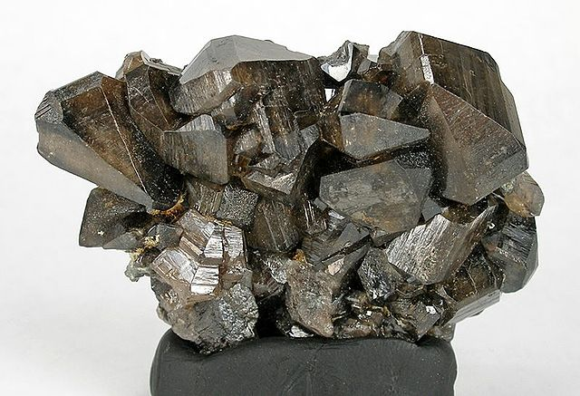

Cassiterite

Information
Information
Cassiterite is found in the USA, Peru, Mexico, Bolivia, Spain, England, Russia, Nigeria, China and Australia. Cassiterite is a divinity stone. It is an grounding stone that is often used sucessfully in deep meditation. One of the most powerful abilities of the stone is the ability to ease the pain and suffering associated with death. Many people believe that Cassiterite can guide the souls of those who have passed, on towards the eternal light. Cassiterite is also known as the stone of personal protection. It will ground and protect you against negative energies. This powerful stone helps break down old structures and gives the needed energy to make new creations possible.
Health Benefits
Link-TextOutfitInspos
Some outfits inspos who match perfectly with the black green stone